来源：https://duuxkmjwsy.feishu.cn/docx/T2aDdk1umog1udxJwHGcCHyNnFc
1、确认组局主题，目标，时间，并发起组局官报名（周二21点开始，22点结束）
2、3选1确认场地，已选择2号场地，根据场地和物料制定开支预算清单，拉群，发起群收款，鼓励大家自我介绍，把组局的初步流程和议题同步参与者（周五21点开始，22点结束）；制定组局详细方案（周五22点开始，0点结束）
3、坐G1003次耗时42分钟12点到达广州，安排Mo.gz把会务物料13点带到会议场地，来来和Mo.gz13点到达会场开始布置现场，14点开启签到并做暖场开始。（周六12点开始，预计18点结束）
第3步是第一次如此执行，后续物料来来会再做一份，直接暂存场地那边，后续组局官提前半小时到场，参与者14点直接到场地即可。
地点：3选1（这次开会试过合适，后续可固定此场地，省的每周找不同场地，舟车劳顿）
地址：广东省广州市海珠区艺景路234号振华商务中心1102号，近客村站/广州塔地铁站；
停车：周边需付费停车
服务：面积中等，预计最大容纳10人，相对高大上，安静的交流空间，提供茶水，需要自己额外买水果和小吃；
收费：5人间美团套餐388元2小时，加人加时需额外付费，加人50元一人，加时80元一小时，预计10人费用900元左右，自购零食200元左右，会务物料100元左右，
人均价格：除开鸽子费用，按照10人预估人均120元
电话：020-89066867，18024095126
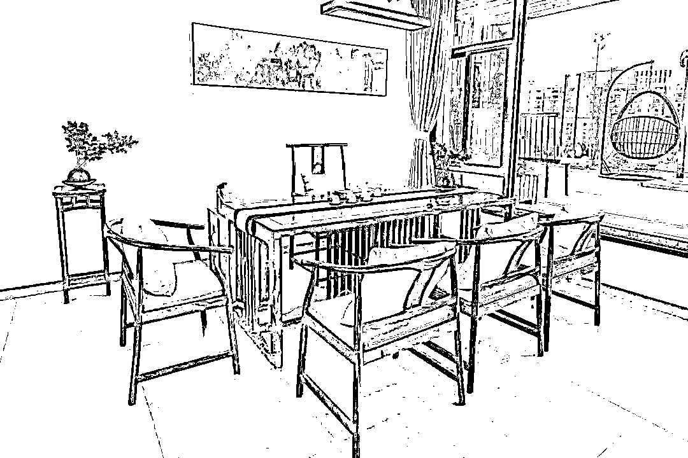
地址：广州天河新塘街道凌塘村启尚艺术园61右边，近天河智慧城地铁站，火炉山森林公园内；
停车：门口可免费停车
服务：面积较大，室外可以露天电影和烧烤，室内可以容纳20人，周边环境优美，安静宽敞的的交流空间，提供茶水和简单的小零食，需要自己额外买水果和小吃；
收费：按天计算，半天优惠价300元（14点到18点），一天优惠价500元（我们用不了这么久），提供茶水，需自购零食200元左右，会务物料约100元
人均价格：除开鸽子费用，按照10人预估人均60元
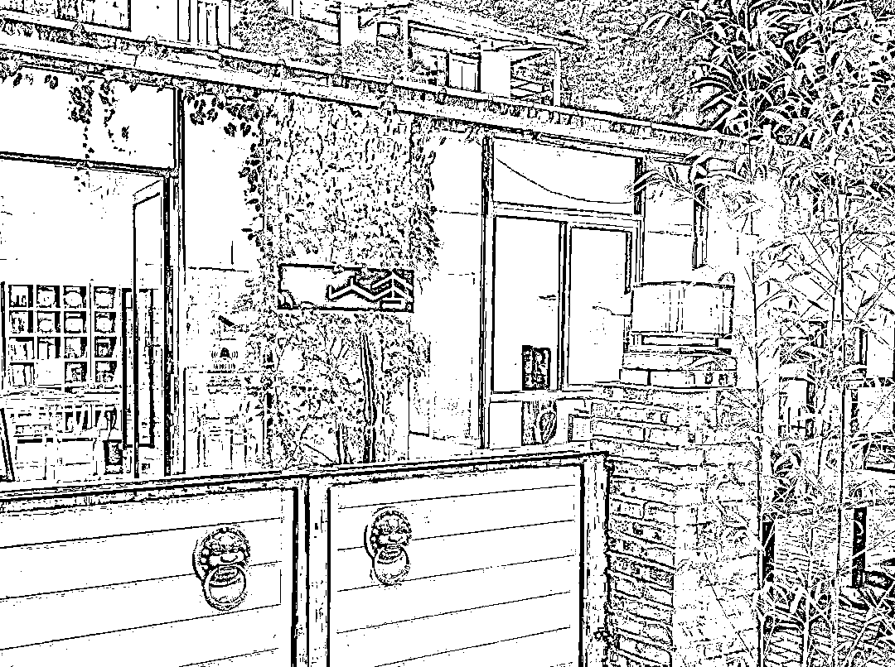
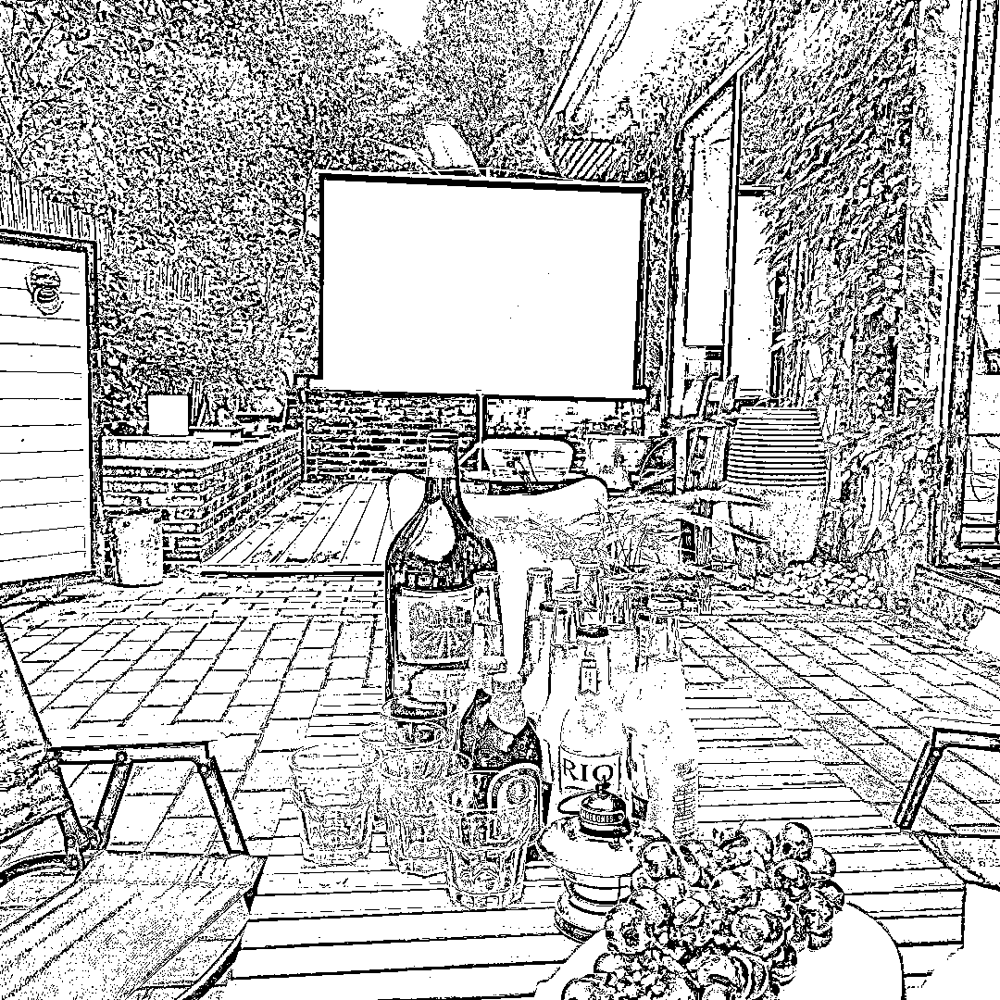
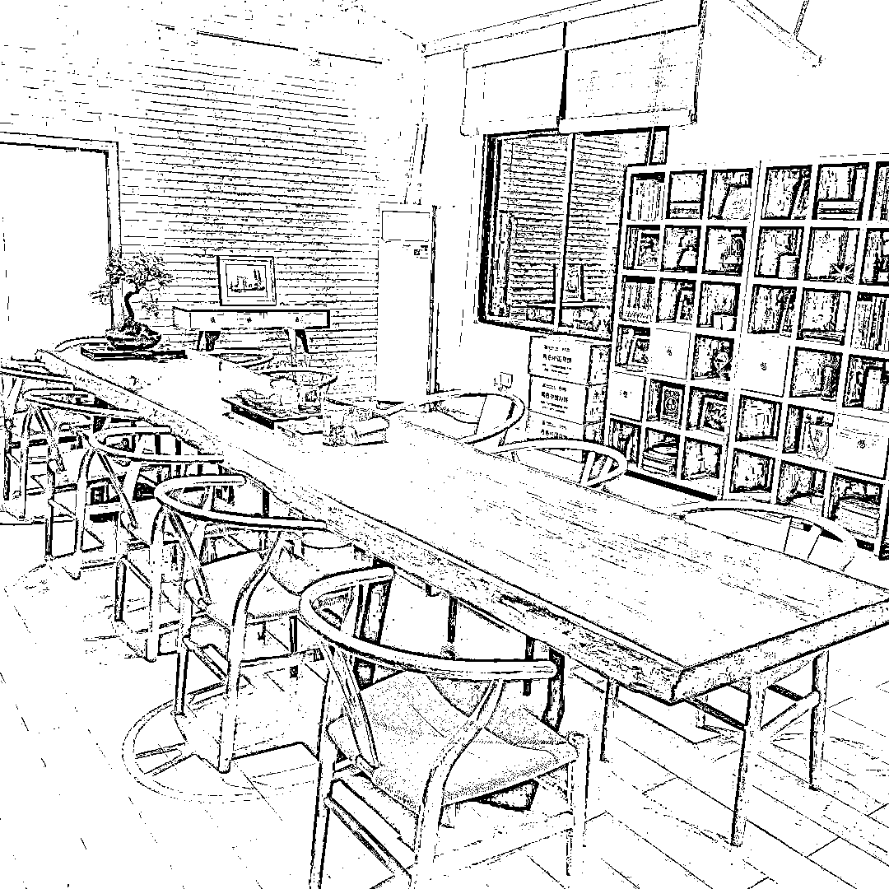
地址：广东省广州市天河区花城大道7号南天广场聚龙阁2907号，近五羊邨地铁站；
停车：周边需收费停车
服务：相对中等，安静的交流空间，提供茶水和简单的小零食，需要自己额外买水果和小吃；
收费：10人内350元3个小时，提供茶水和小零食，提供天台和五楼空间，自购零食200元左右，会务物料约100元
人均价格：除开鸽子费用，按照10人预估人均70元
真诚开放的面对自己和大家，不要带面具来参加组局。
请大家全程不玩手机，手机上缴统一保管；组局官会安排1个手机全程录音最后分享给大家录音文件；
主题分享时候请大家保持安静，组局官1人分享，最后有有专门的答疑时间。
请带着问题而来，我们力争解决大家的难题
1》每人提出1个自己对AI在电商领域中应用中遇到的难题？
（比如AI怎么做详情，AI怎么完美替代模特，AI怎么做电商产品图，这种类型的）
2》每人提出1个自己觉得化解上述难题的1个解决方案
3》每人提出1个自己从0到1跑通AI在电商领域引用的案例
请勿空降或者带朋友过来，多谢配合
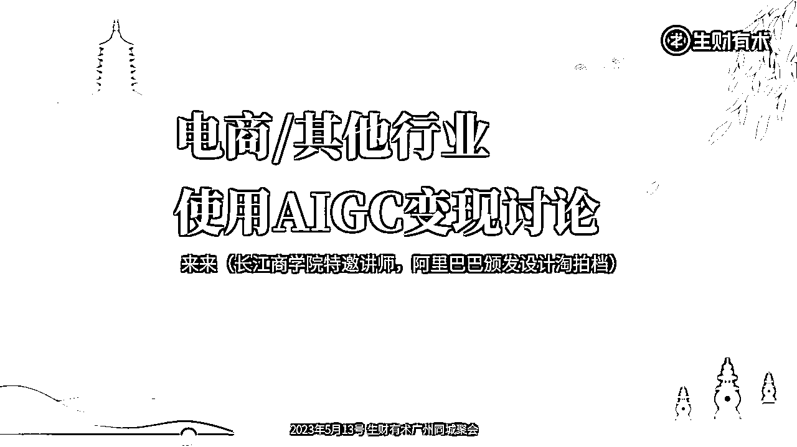
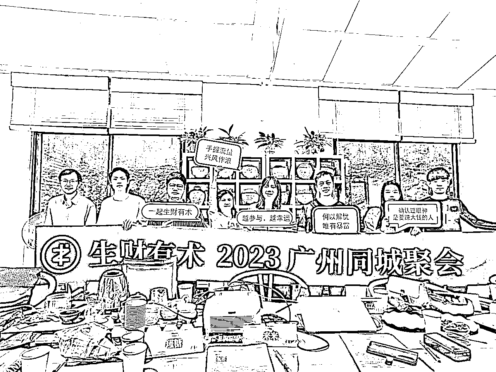
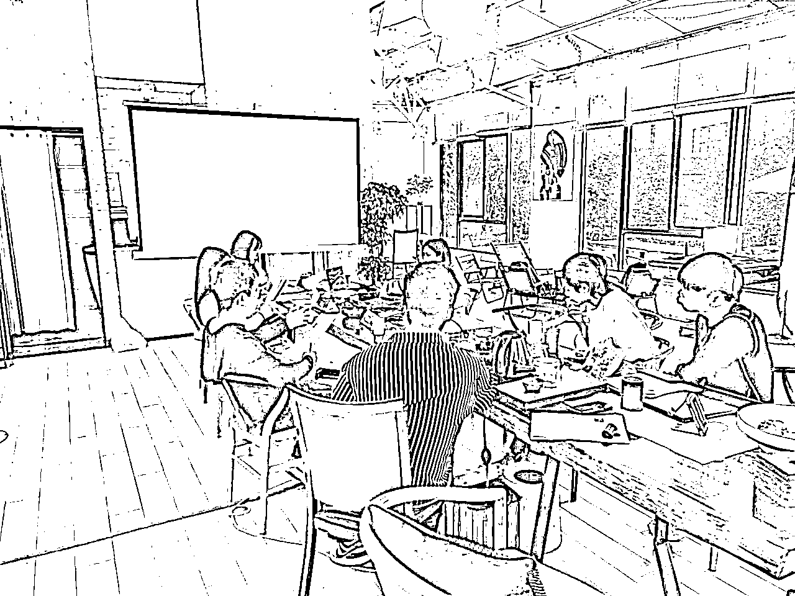
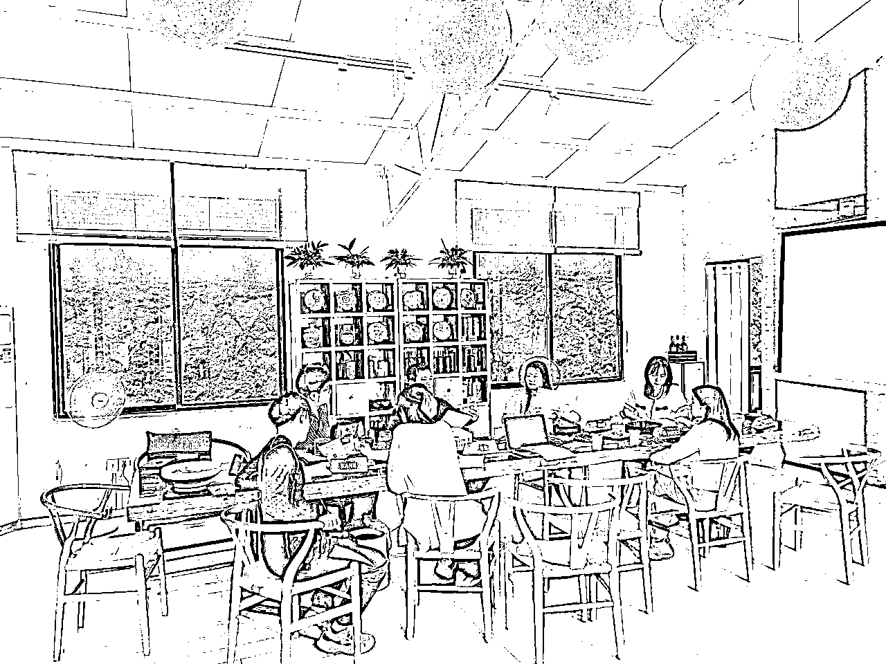
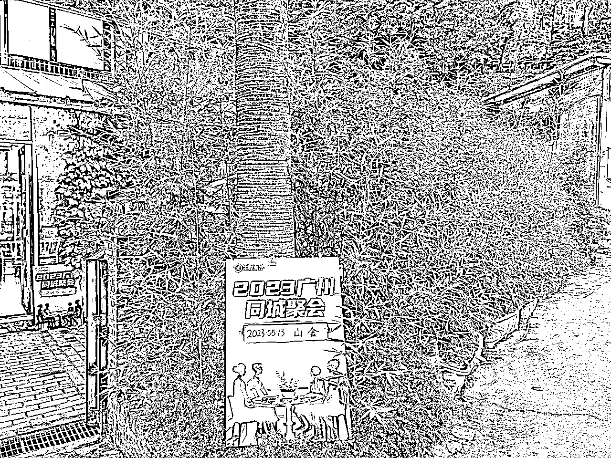
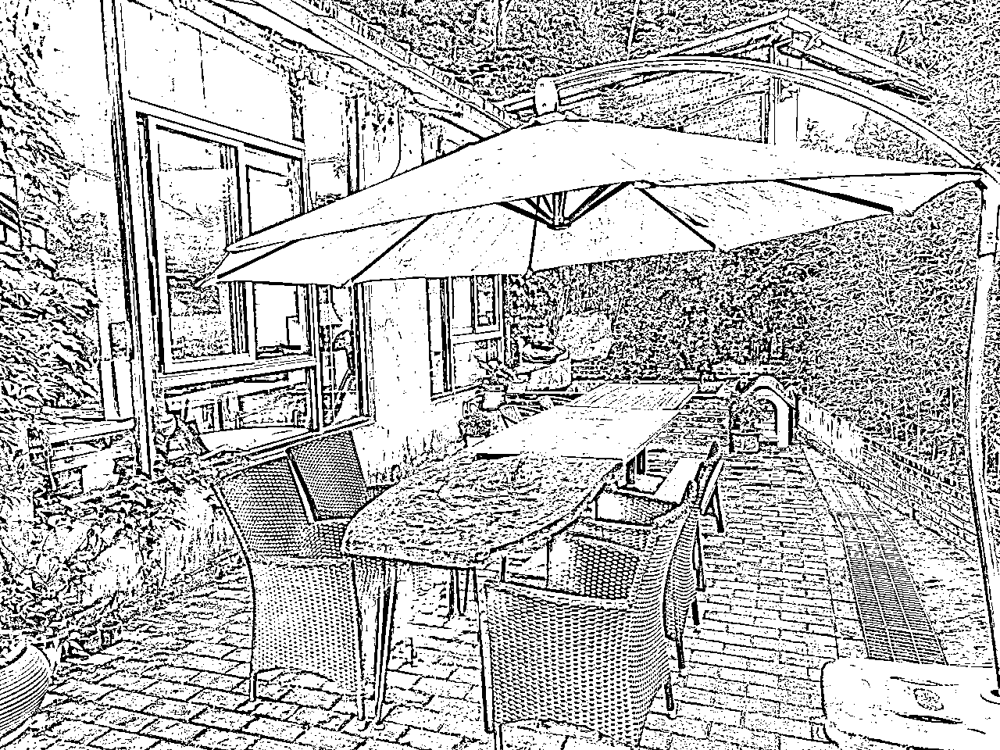
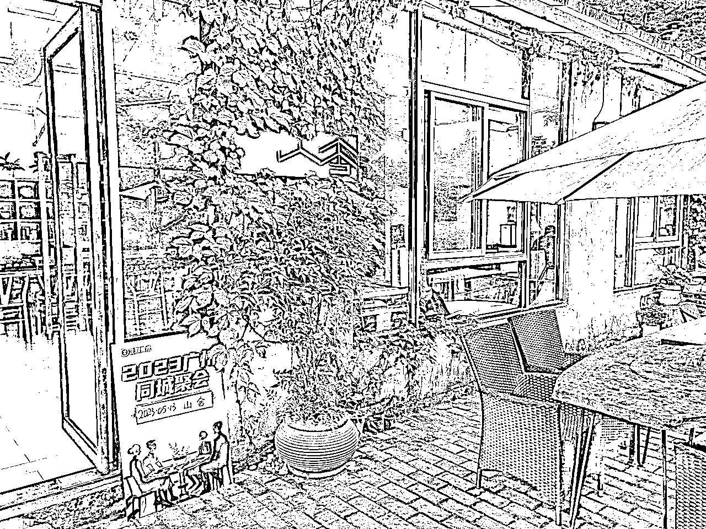
1、每人提出1个自己用AI在电商/其他领域中变现中遇到的难题？
（比如AI怎么做详情，AI怎么完美替代模特，AI怎么做电商产品图？）
2、每人提出1个自己化解上述难题的1个解决方案。
（比如可以使用ControlNet完美控制人物资质）
无复盘分享不退鸽子费，复盘分享截止时间为第2周周一中午12:00前。
每个圈友都可将自己的复盘总结分享到生财有术知识星球。
这次是成为四期圈友第一次参加线下组局，这次组局官来总选的位置不错，远离城市的喧嚣。很感谢这次组局，来来从英德一大早就来广州忙碌一天，特别感谢。
这次主要聊AIGC的变现方式，我属于外行人，瞬间打破了认证，原本早期淘宝一套产品图大几千块钱，拍出来效果不好相当于废了，但是通过AIGC可以极大降低成本。之前公司有考虑做手办类目，但是对于这类客户价钱不是问题，但对于我们来说成本很高，一次失败意味着大几百甚至上千就没了，通过AIGC可以先生产效果图再制作，时间和精力也极大的降低，平常出模要一个礼拜时间，AIGC只要几个小时。
除了这些之外，有小伙伴是做中老年矩阵带货，但是年轻人，很早就卷入银发市场，现在老龄化确实很严重，也羡慕这些小伙伴在这个赛道有不错的成绩。肯干肯拼。
还有跨行业的莫哥，牙姐给我带来成年人的焦虑，从职业发展还有未来规划，走一步步步为营，要么洒脱点换赛道，但是这个也是意味着从0开始，很佩服牙姐能做到每一个赛道都有如此优秀的成绩，自媒体女王。莫哥人到中年追求稳定上涨，海南封关这个政策会隐藏很大的红利机会，但是一定要正向有沉淀的长期发展，中间大家给了不少搞钱的建议，长期主义才是现在的追求。
最后探讨了下来来有关于出事的详细路径，没有认知之前一直以为这个是个难度很大的事情，但是讲完拆解后发现，里面的玩法和变现路径很多，或许有些事物不一定非要赚钱，有其他的变现路径，打造自己的个人IP有更多的一个发展。
感谢分享～一起生财有术
5.13在火炉山参加的AIGC赚钱局，体验特别好，组局官来来场控做得特别好，把要分享的重点先分享了，然后大家做自我介绍，自我介绍的时候，特别会问问题，从而扩展了很多领域，学到了很多东西，特别长见识。
我们 聊到了AIGC变现方式，AI绘画在电商、设计领域的应用和变现、虾皮台湾站的运营内幕、信用卡额度提升内幕、娱乐账号运营内幕、B站up主商务合作内幕、AI文爱软件、区块链交易、外贸公司内幕、小红书霸屏、知乎运营、网络新闻公关、撸网贷内幕、港股打新批量操作、网课/知识付费流程、出书流程和内幕、身心灵公司内幕、会议营销内幕、海南发展机会、徐闻地理优势、中老年带货市场……
感谢各位伙伴的分享～有机会一起生财有术
https://articles.zsxq.com/id_4nkc321p8nj1.html
这次的聚会是半山的一个茶室，环境还可以，就是蚊子有点凶。感谢来来组局，而且也分享了很多的电商实际应用的干货。我自己对于AIGC不是很懂，也暂时没啥问题，这次来是纯学习的，来交个朋友。这次的自我介绍花费的时间很长，针对每个人的自我介绍讲时间比较长，展开的东西也很多。尤其是每个人的项目这一块，包括了以前做什么，以后怎么做，大家就像一个智囊团一样，给出了很多的分析。
https://mp.weixin.qq.com/s/wc6F8rCdOTGmTf7zWawPKQ
组局群里除了组局官，还会有志愿者以及参局的组员，其中志愿者是帮助协助组局官完成组局相关事宜，不参与线下活动。
组局后组员需要交99元鸽子费，如活动涉及到费用，建议AA制，一般来说是活动后多除少补。如有特殊可以咨询志愿者后和组员沟通协调。
相关物料请参阅组局官手册里的物料，里面有相关模板。
活动当天如流程，涉及到需要提前思考的问题，建议提前一天发到组局群，并知会所有人知会，以便提前做准备，提升流程顺畅度。
如组局官忙不过来，可以提前在组局群对参局组员发起招募，用合作协助形式来完成。
手册里提到的物料可以根据组局官的活动设计来决定是否制作以及制作数量，不强制执行。
作为群体活动，建议准时负责，活动即将开始的时候，需要联系还没到场的组员了解具体情况，视乎实际情况先行开展活动，同时关注未到的成员看看是否提供必要帮助。
组局官而言，应注意流程顺畅，控制时间，过程中做好素材归纳（比如拍照、录音、记录），紧贴主题，让活动聚焦价值。
❌不符合道德文明
❌有违法律法规
❌跟生财理念背道而驰的
建议是分享有价值+逻辑完整+具备可读性的内容
建议是活动结束后24小时内，这样较为印象清晰而且具备热度